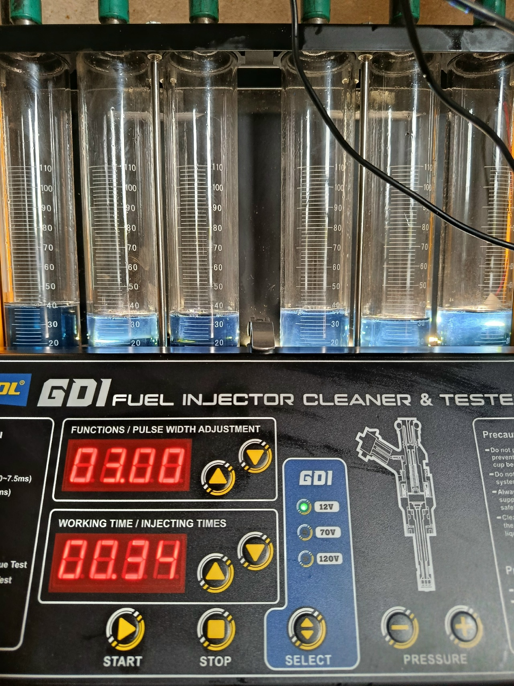
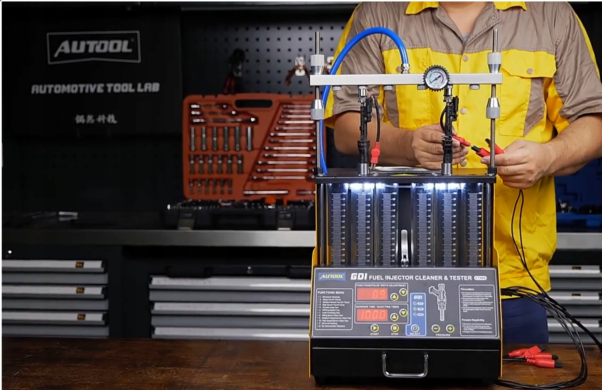
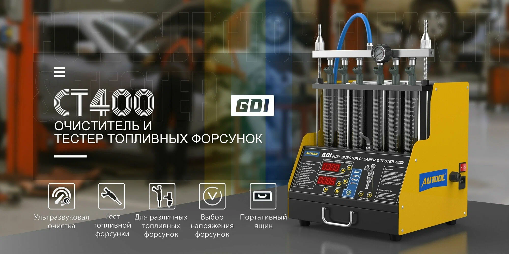
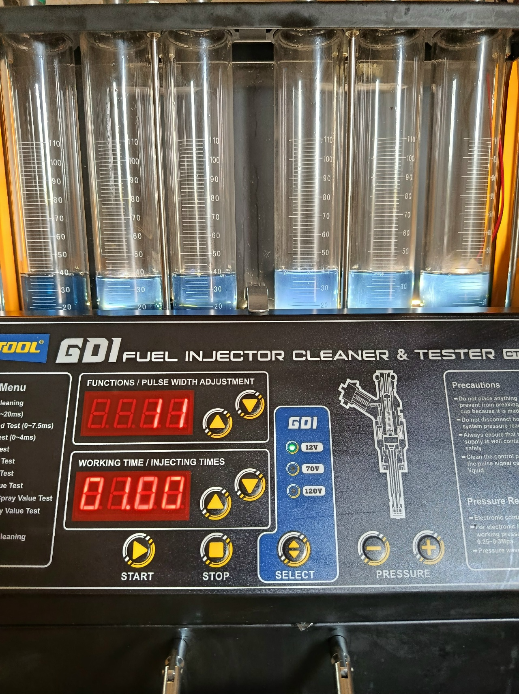

01
Проверка до очистки
Оцениваем состояние форсунок: факел распыла, производительность и герметичность.


ПРОФЕССИОНАЛЬНАЯ ПРОВЕРКА ФОРСУНОК
Проверка форсунок до и после промывки.
Очистка и контроль результата на стенде AUTOOL.
Оцениваем состояние форсунок: факел распыла, производительность и герметичность.

Подбираем способ очистки с учётом конструкции форсунок и результатов первого теста.

Повторяем диагностику, сравниваем результаты и объясняем дальнейшие действия.

Качество • Точность • НадёжностьПроверка. Промывка. Контроль результата.
Записаться на диагностику →УСЛУГИ
Не всякую неисправность устраняет промывка.
Тест на стенде помогает выбрать следующий шаг.
Оцениваем работу снятых форсунок: подачу жидкости, равномерность распыла и герметичность.
Первичный тест, очистка подходящим для форсунок способом и повторная проверка результата.
Объясняем, что показала проверка и есть ли смысл в дальнейшей очистке или нужна замена.
Стоимость и возможность обслуживания уточняются по типу форсунок. Для непосредственного впрыска (GDI) совместимость со стендом проверяется заранее.
РЕЗУЛЬТАТЫ
Проверка до и после промывки.
Нажмите на фото, чтобы рассмотреть детали.
Пример проверки одного комплекта форсунок. Результат промывки зависит от их состояния; точное сравнение производительности проводят при одинаковых параметрах теста.
ВОПРОСЫ
Нет. Очистка может помочь при загрязнении, но не устраняет износ, повреждения или электрическую неисправность. Поэтому начинаем с проверки и оцениваем результат повторным тестом.
Для проверки на стенде форсунки необходимо снять. Возможность снятия и установки, а также их стоимость уточните отдельно до визита.
Это зависит от модели форсунки и совместимости с оборудованием. Перед визитом подготовьте модель автомобиля, код двигателя или номер форсунки.
Стоимость и срок зависят от типа, количества и состояния форсунок, а также состава работ. Их согласуют после уточнения данных автомобиля.
ФОРСМАСТЕР · КАЛУГА
Позвоните, чтобы уточнить стоимость обслуживания и согласовать время визита.
Марка, модель, год выпуска и объём двигателя. Номер форсунки — если известен.
Как работает двигатель и что требуется: проверка или проверка с промывкой.
Зависят от типа и количества форсунок. Снятие и установка согласуются отдельно.
Запись на обслуживание — по телефону.